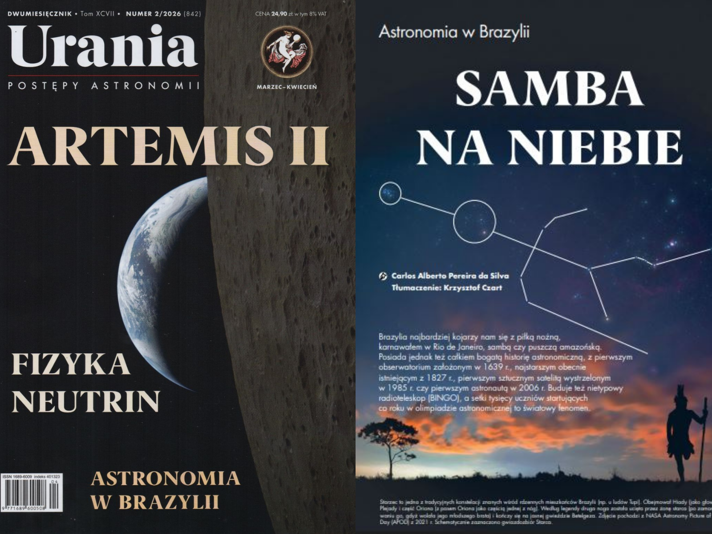

BERG publica artigo sobre astronomia brasileira em revista na Polônia
Artigo produzido pelo BERG sobre a astronomia brasileira é publicado na tradicional revista Urania, da Sociedade Polonesa de Astronomia, ampliando a presença internacional das ações de divulgação científica do grupo.
Saiba mais →